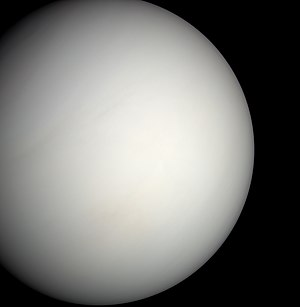
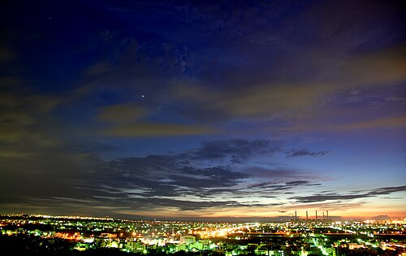

ناهید یا زهره[۱۴] به ترتیب نزدیکی به خورشید، دومین سیارهٔ زمینسان سامانهٔ خورشیدی است که در هر ۲۲۵ روز یکبار به دور خورشید میچرخد. مدار زهره، میان مدارهای زمین و تیر قرار گرفته و از نظر مداری، نزدیکترین فاصله را با مدار زمین دارد.[۱۵] ناهید پس از ماه، درخشانترین جرم آسمانی طبیعی است که به هنگام شب در آسمان زمین دیده میشود و قدر ظاهری آن به ۴٫۶- میرسد.[۱۲] در زبان لاتین به این سیاره وُنوس میگویند که به معنی خدای عشق و زیبایی در روم باستان است.[۱۶][۱۷]
سیارهٔ ناهید (زهره)، بدون قمر است و در مدار تقریباً دایرهواری بهدور خورشید میگردد. این سیاره از بسیاری دیدگاهها ازجمله اندازه، جرم، گرانش و ترکیبات ساختاری به زمین همانندی دارد و به خاطر همین نزدیکیها آن را سیارهٔ «خواهر زمین» نیز خواندهاند. زهره از نظر حجم و جرم، هفتمین جسم بزرگ در سامانه خورشیدی است.
جهت چرخش زهره به دور خود، مانند مابقی سیارات، پادساعتگرد است. اما انحراف محوری ۱۷۷ درجه ای آن، چرخش این سیاره را ساعتگرد نشان میدهد. زهره در ابتدا در همان جهتی میچرخید که سیارات دیگر میچرخیدند و به نوعی هنوز هم میچرخد: به سادگی محور خود را در نقطه ای تقریباً ۱۸۰ درجه چرخانده است. به عبارت دیگر، در همان جهتی که همیشه میچرخد، فقط وارونه، به طوری که نگاه کردن به آن از سیارات دیگر باعث میشود چرخش ساعتگرد به نظر برسد. دانشمندان استدلال کردهاند که کشش گرانشی خورشید بر جو بسیار متراکم این سیاره میتواند باعث جزر و مد شدید جوی شود. چنین جزر و مد، همراه با اصطکاک بین گوشته و هسته زهره، میتوانست در وهله اول باعث این چرخش شود.[